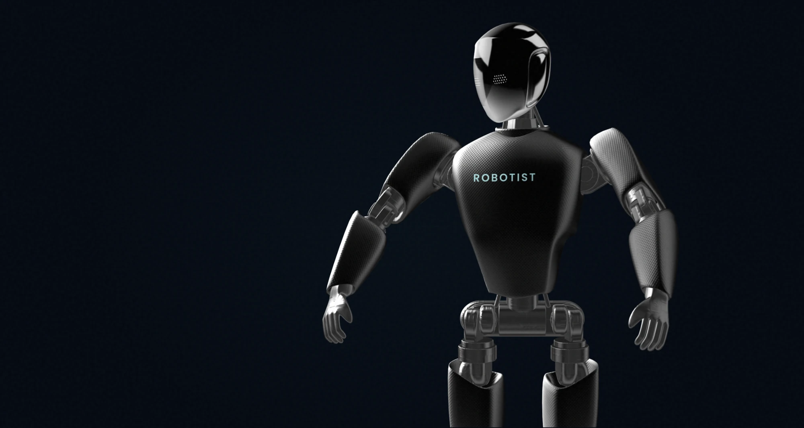
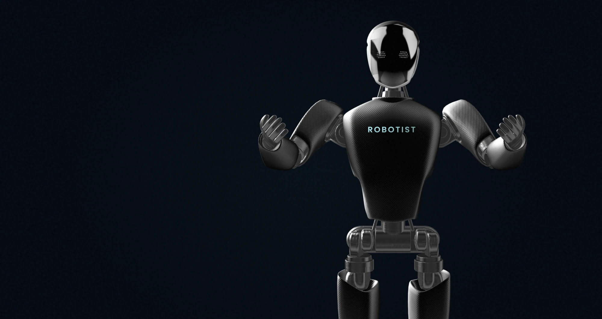
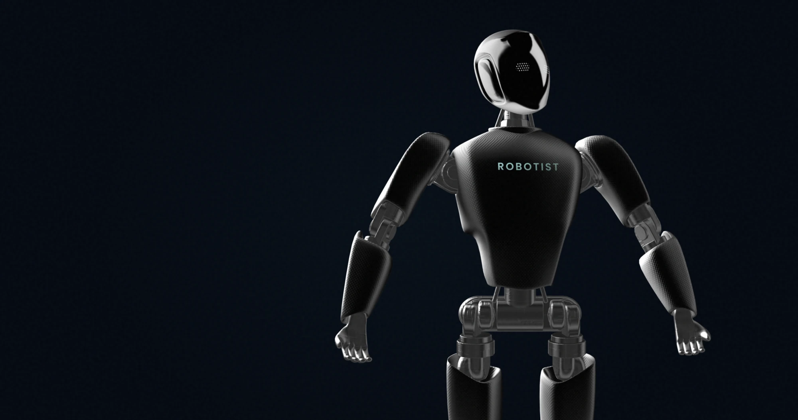
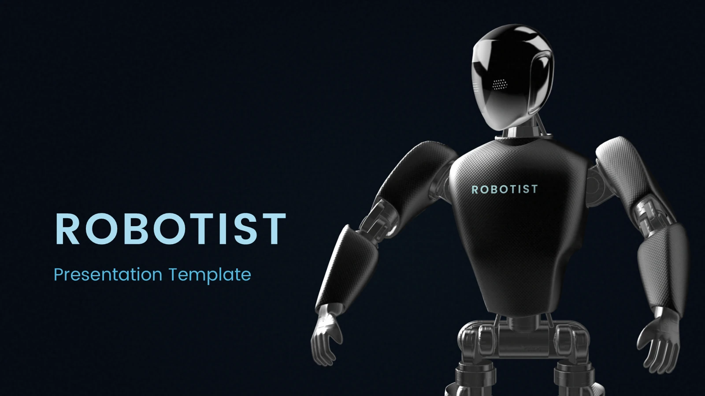

Brand strategy & visual identity / 2026
A human
introduction
to machines.

01 / The brief
A clear point of entryMake robotics
easy to
understand.
Robotist’s brand strategy centres on curation: helping people make sense of unfamiliar machines and the choices around them.
The 2026 system brings that intent into a consistent visual language. Deep navy gives the products room. Ocean blue directs attention. A measured typographic voice keeps the experience approachable.
02 / Strategic position
The expert friend
who happens to
know robots.
This is the persona defined in the brand book: authoritative without becoming remote, premium without excluding people. The presentation gives the machines visual presence while keeping explanations plain.
03 / The identity
Poppins Medium / Wide trackingRoom around
every letter.
A deliberately spaced wordmark holds its own beside complex machines.
The source system specifies Poppins Medium, uppercase, with 0.20em tracking. The original supplied vector is used here, with generous clear space rather than an added emblem.
Brand center / original logo, full palette, typography & source guide ↗
04 / Colour & typography
Cold / Precise / InfiniteA restrained
technical palette.
Navy#060D18
Blue#4AA8C8
Tint#A8DCEF
Space#F0F4F8
Supporting layers / the full navy hierarchy
#0C1828Raised layer #142035Structure #1E3550Aa 0123
A single geometric family, with weight and spacing doing the work. Medium, widely tracked display type. Light, openly spaced section headings. Light body text and semibold labels, following the source type scale.
05 / Brand imagery study
Four supplied visual posesAn expressive
visual presence.
The archived brand character explores gesture within the same dark, controlled environment. These are concept renders, separate from the manufacturer products below.
{kind=link}

{kind=link}

{kind=link}

Presentation interaction added for this case study. The imagery demonstrates brand expression, not a newly engineered robot or a deployed companion product.
06 / The curated product world
Source collection / September 2026Different forms.
A coherent
frame.
Humanoid, quadruped, service and performance imagery can share one visual stage while retaining each manufacturer’s identity.


Product visuals are supplied assets from the Robotist collection. This portfolio view does not establish current availability, partnership status or product performance.
07 / Digital art direction
The archived landing compositionThe system,
in context.
The original landing key visual shows how the identity, imagery and interface colour work together. This is the recovered composition, not a reconstruction of the current live store.

From identity
to interface.
The brand across a real user journey: homepage, about, comparison. Original, unretouched browser captures in new presentation frames. Select a screen to see it at full size.


The live site uses system fonts; the archived identity specifies Poppins. These captures document the implementation without silently changing the case-study VI. Product, availability and performance statements inside the screenshots are website content, not independently verified results. Logo, palette and source record ↗
08 / Presentation applications
Original working templateConsistency beyond
the first screen.
The presentation system carries the same wordmark, colour discipline and typographic rhythm into project communication. These are original template pages, shown as evidence of the system.
{kind=link}


09 / The work on record
Active, with clear boundariesA brand system.
A foundation
to build on.
- Strategic positioning2026 brand book and defined brand persona.
- Visual identityOriginal vector marks, colour rules, type and image direction.
- Working applicationsLanding composition, presentation template and product asset library.
What remains a proposal?
The separate Human Frame companion strategy and its continuity concepts remain proposals in this case. No deployment or functional companion capability is implied.
What is not included?
Commercial agreements, quotations, financials and private contact details. Launch results and client approval have not been established.
Pulse Branding project archive. New case-study layout and interactions, original brand/product assets. Evidence and credits ↗